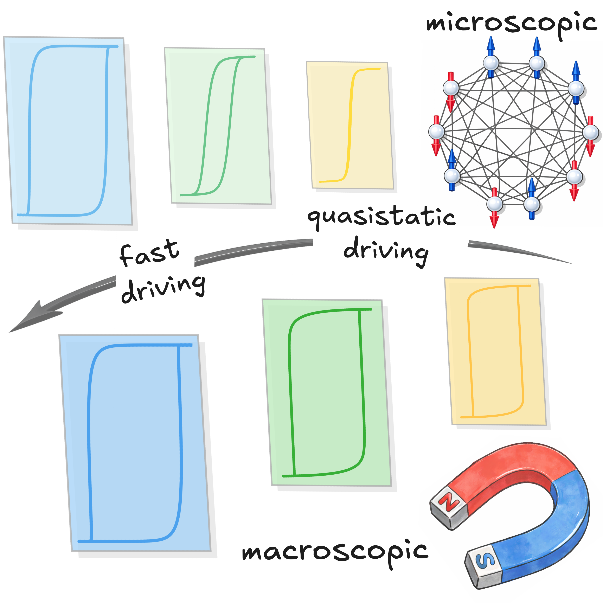

Coercivity Landscape Characterizes Dynamic Hysteresis
Phys. Rev. Lett. 136, 117102 (2026). DOIPDFPOSTER
A unified landscape picture for dynamic hysteresis across slow-to-fast driving regimes.
Editors’ SuggestionDynamic hysteresisCoercivity landscape